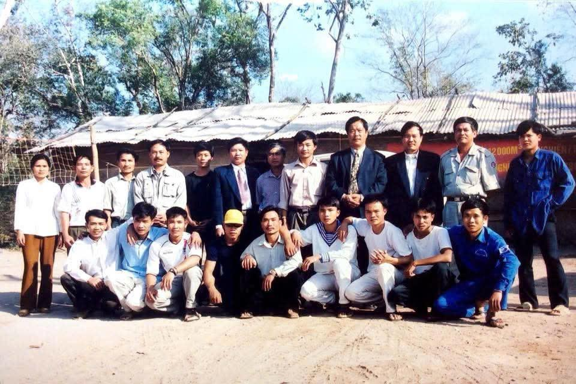
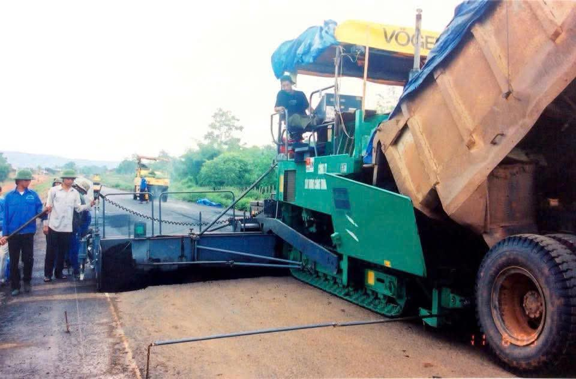
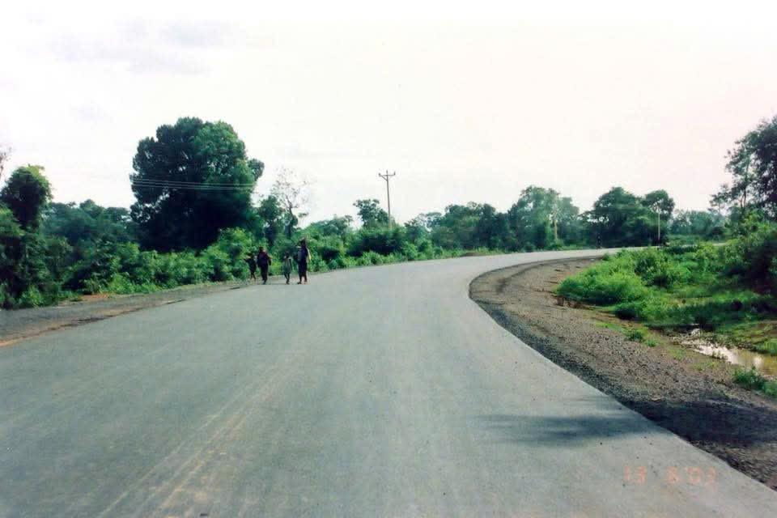

ໃສ່ຮູບຜູ້ບໍລິຫານAdd photo
Hoang Van Tien
ຜູ້ອຳນວຍການໃຫຍ່ (CEO)
Chief Executive Officer (CEO)
ບໍລິສັດລາວ ທີ່ຊ່ຽວຊານດ້ານການກໍ່ສ້າງ ແລະ ໃຫ້ຄຳປຶກສາ ໃນຂະແໜງການຂົນສົ່ງ ແລະ ພື້ນຖານໂຄງລ່າງ.
A Lao company specializing in construction and consulting for transport and infrastructure.
ບໍລິສັດ ເຟືອງຟ້າ ໄຊຊະນະ 838 ຈຳກັດຜູ້ດຽວ ສ້າງຕັ້ງຂຶ້ນໃນປີ 2021. ພວກເຮົາເປັນບໍລິສັດລາວ ທີ່ຊ່ຽວຊານດ້ານການໃຫ້ຄຳປຶກສາ ແລະ ການກໍ່ສ້າງ ໃນຂະແໜງການຂົນສົ່ງ, ວິສະວະກຳໂຍທາ ແລະ ພື້ນຖານໂຄງລ່າງ ໂດຍອີງໃສ່ປະສົບການໃນອຸດສາຫະກຳຫຼາຍກວ່າ 20 ປີ ຂອງທີມຜູ້ບໍລິຫານ.
Fueangfa Xaysana 838 Sole Co., Ltd. was founded in 2021. We are a Lao company specializing in consulting and construction for transport, civil engineering and infrastructure, built on our leadership’s more than 20 years of industry experience.
ພວກເຮົາຍຶດໝັ້ນໃນຄວາມຊື່ສັດສຸດຈະລິດ, ຄວາມເປັນມືອາຊີບ ແລະ ການຮ່ວມມືໄລຍະຍາວ ໂດຍເອົາຄວາມພໍໃຈຂອງລູກຄ້າເປັນໃຈກາງຂອງທຸກວຽກທີ່ເຮົາເຮັດ.
We stand for integrity, professionalism and long-term partnership, and keep client satisfaction at the center of everything we do.
ຊື່ “ເຟືອງຟ້າ ໄຊຊະນະ” ແມ່ນຊື່ຂອງຜູ້ກໍ່ຕັ້ງບໍລິສັດ ແລະ ເປັນສັນຍາລັກຂອງການເຊື່ອມຕໍ່ລະຫວ່າງຄົນລຸ້ນກ່ອນ ກັບ ຄົນລຸ້ນຕໍ່ໄປ ພ້ອມທັງມິດຕະພາບລະຫວ່າງ ລາວ ແລະ ຫວຽດນາມ. ຕົວເລກ “838” ໝາຍເຖິງໂຊກ, ການເຕີບໂຕ ແລະ ຄວາມຈະເລີນຮຸ່ງເຮືອງ.
The name “Fueangfa Xaysana” is the name of the company’s founder. It stands for the link between generations and the friendship between Laos and Vietnam. The number “838” stands for luck, growth and prosperity.

ເປັນບໍລິສັດທີ່ປຶກສາ ແລະ ກໍ່ສ້າງຊັ້ນນຳໃນລາວ ທີ່ໄດ້ຮັບຄວາມໄວ້ວາງໃຈຈາກທັງພາກລັດ ແລະ ເອກະຊົນ ແລະ ສ້າງມູນຄ່າໄລຍະຍາວໃຫ້ແກ່ລູກຄ້າ, ພະນັກງານ ແລະ ຊຸມຊົນ.
To be a leading consulting and construction company in Laos, trusted by public and private clients, creating long-term value for clients, employees and communities.
ໃຫ້ບໍລິການທີ່ມີຄຸນນະພາບສູງ, ປອດໄພ ແລະ ໄດ້ມາດຕະຖານສາກົນ
High-quality, safe services that meet international standards
ພັດທະນາຄວາມສາມາດຂອງພະນັກງານຢ່າງຕໍ່ເນື່ອງ
Continuously building our employees’ skills
ບໍລິການທີ່ທັນເວລາ ແລະ ເອົາໃຈໃສ່ທຸກລາຍລະອຽດ
Timely service with attention to detail
ນຳໃຊ້ເຕັກໂນໂລຊີໃນທຸກໄລຍະຂອງໂຄງການ
Using technology at every stage of a project
ຮັບຜິດຊອບຕໍ່ສັງຄົມ ແລະ ສິ່ງແວດລ້ອມ
Responsible toward society and the environment
ຜູ້ອຳນວຍການໃຫຍ່ (CEO)
Chief Executive Officer (CEO)
ຜູ້ກໍ່ຕັ້ງບໍລິສັດ
Founder
“ສ້າງສາຄຸນນະພາບ ເຊື່ອມຕໍ່ອະນາຄົດ ກ້າວໄປສູ່ໄຊຊະນະ”
“Building quality, connecting the future, moving toward victory.”
ໂຄງການລຸ່ມນີ້ ແມ່ນປະສົບການສ່ວນຕົວຂອງ ທ່ານ Hoang Van Tien ໃນຊ່ວງປີ 1989–2020 ກ່ອນບໍລິສັດສ້າງຕັ້ງ, ບໍ່ແມ່ນຜົນງານຂອງບໍລິສັດ.
The projects below are the personal experience of Hoang Van Tien from 1989 to 2020, before the company was founded. They are not company projects.
ສູນກວດກາຂົວ ແລະ ເສັ້ນທາງຫວຽດນາມ (VIBROCE), ກະຊວງຄົມມະນາຄົມ ຫວຽດນາມ: ກວດກາ, ທົດສອບ ແລະ ປະເມີນຄຸນນະພາບໂຄງການຂົວ ແລະ ເສັ້ນທາງ.
Vietnam Bridge and Road Inspection Center (VIBROCE), Ministry of Transport of Vietnam: inspection, testing and quality assessment of bridge and road projects.
ຫົວໜ້າພະແນກແຜນການ ແລະ ວິຊາການ, ໂຄງການຟື້ນຟູເສັ້ນທາງເລກທີ 6 (ຊຳເໜືອ – ນາເນີນ), 90 ກມ, ທຶນຈາກ KfW.
Head of Planning and Technical Department, National Road 6 rehabilitation (Xam Neua – Na Neun), 90 km, funded by KfW.
ຄຸ້ມຄອງ ແລະ ປະສານງານການກໍ່ສ້າງ ໂຄງການຟື້ນຟູເສັ້ນທາງເລກທີ 9 (ເມືອງພິນ – ລາວບາວ, 70 ກມ) ແລະ ເສັ້ນທາງເຊໂນ – ສະຫວັນນະເຂດ, ທຶນຈາກ ADB.
Project management and coordination, National Road 9 rehabilitation (Phin – Lao Bao, 70 km) and the Xeno – Savannakhet road, funded by ADB.
ຜູ້ອຳນວຍການໂຄງການ ຍົກລະດັບເສັ້ນທາງເລກທີ 2E (ເມືອງຂວາ – ໄຕຕຣາງ), ທຶນຊ່ວຍເຫຼືອລ້າຈາກລັດຖະບານຫວຽດນາມ.
Project Director, National Road 2E upgrade (Muang Khua – Tay Trang), Vietnamese government grant.
ຫົວໜ້າວິສະວະກອນ ທາງດ່ວນ La Son – Tuy Loan (ທາງດ່ວນເໜືອ-ໃຕ້), ພາກກາງຂອງຫວຽດນາມ.
Chief Engineer, La Son – Tuy Loan Expressway (North–South Expressway), central Vietnam.
ຜູ້ອຳນວຍການໂຄງການ ເຄືອຂ່າຍເສັ້ນທາງໃນເຂດຕົວເມືອງໃໝ່ບຸນເໜືອ, ແຂວງຜົ້ງສາລີ, ຮ່ວມກັບ Norinco Group.
Project Director, urban road network for Boun Neua new town, Phongsaly Province, with Norinco Group.


ພວກເຮົາໃຫ້ຄວາມສຳຄັນກັບຄວາມປອດໄພ, ການປົກປ້ອງສິ່ງແວດລ້ອມ ແລະ ສະຫວັດດີພາບຂອງຊຸມຊົນທ້ອງຖິ່ນໃນທຸກໂຄງການ. ບໍລິສັດສ້າງວຽກເຮັດງານທຳໃຫ້ຄົນທ້ອງຖິ່ນ ແລະ ຝຶກອົບຮົມວິສະວະກອນ ແລະ ຊ່າງເຕັກນິກ.
We put safety, environmental protection and the wellbeing of local communities first on every project. We create jobs for local people and train engineers and technicians.
ກຸ່ມບໍລິສັດ VK Group ດຳເນີນທຸລະກິດດ້ານການຄ້າ ແລະ ນຳເຂົ້າ, ການກໍ່ສ້າງ, ຢາງປູທາງ, ການຂົນສົ່ງ ແລະ ບໍ່ແຮ່ ໃນ ສປປ ລາວ ແລະ ເປັນຕົວແທນຈຳໜ່າຍລົດ GAC, AION, Kinglong ແລະ Riddara.
VK Group works in trading and import, construction, asphalt, transport and mining in Laos, and is the distributor for GAC, AION, Kinglong and Riddara vehicles.
ເຂົ້າເວັບໄຊ VK GroupVisit VK Group